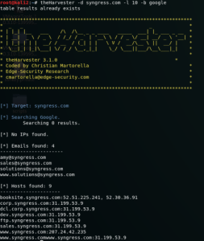

theharvester
theHarvester (
https://github.com/laramies/theHarvester):
It can be a
passive reconnaissance using a search engine like google or
an
active reconnaissance using a DNS.
./theharvester.py -d <site to scan> -l <number of result> -b <search engine> -f savedFile.html
theHarvester -d <site to scan> -l <number of result> -b <search engine> -f savedFile.html
example:
theHarvester -d netflix.com -b all -f savedFile.html
 -d: Domain to search or company
name
-b: data source:
all (simultaneously
search in all the sources), baidu, bing, bingapi, dogpile, google, googleCSE, googleplus, google-profiles, linkedin,
pgp, twitter, vhost, virustotal, threatcrowd, crtsh, netcraft, yahoo
-l: limit the number of
results to work with (Bing goes from 50 to 50 results, Google 100 to 100, and PGP doesn't use this option)
-c: perform a DNS brute force for the domain name(active reconnaissance)
-g: use Google
dorking instead of normal Google search
-s: start in result number X (default: 0)
-v: verify host name
via DNS resolution and search for virtual hosts
-f: save the results into an HTML and XML file (both)
-n: perform a DNS reverse query on all ranges discovered
-t: perform a DNS TLD expansion discovery
-e:
use this DNS server
-p: port scan the detected hosts and check for Takeovers (80,443,22,21,8080)
-l:
limit the number of results to work with
-h: use SHODAN database to query discovered hosts
{kind=link}